신체정렬운동
우리는 누구나 매일 정도의 차이는 있지만, 잘못된 자세로 일하고, 한쪽 손발을 다르게 씀으로서 신체정렬이 조금씩 틀어지게 생활하고 있습니다. 이러한 신체 부정렬 상태를 효과적으로 편하게 개선하는 방법을 제시합니다. 올바른 자세와 움직임을 위한 9가지 신체정렬 운동법입니다. (이 부분은 치료적 맞춤운동 연구소 문형철원장님의 강의와 정보를 정리한 자료입니다.)
1. 전정재활운동
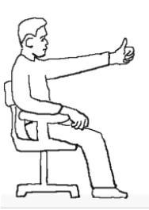
처음에는 앉아서 천천히 30회 아침저녁으로 시행하고 서서히 강도를 높여 빠른 회전속도로 최대 20분까지 높인다. 다음단계는 서서 시행하고, 마지막 단계는 한발로 서서 시행한다. 눈을 감고 한발로 서서 시행하는 단계를 완성(필자도 아직 도달하지 못한 단계)하면 고유수용감각의 기능은 최대로 극대화될 것이다.
1)손가락보고 회전, 좌우측굴 10회씩
2)눈감고 회전, 좌우측굴 10회씩 빠르게 할수록 좋다.
2.Chin-in 운동
1) 1단계 앙와위
급성 목디스크 환자처럼 경추 불안정성이 심한 경우에는 누워서 시행하고, 그렇지 않은 경우에는 편하게 앉아서 시행한다. 급성 목디스크로 통증이 심할 때는 천천히 통증없는 범위에서 45회 3세트를 반복하면 통증치료에 효과적이다. 1단계 앉아서 턱당기기는 틈틈히 시
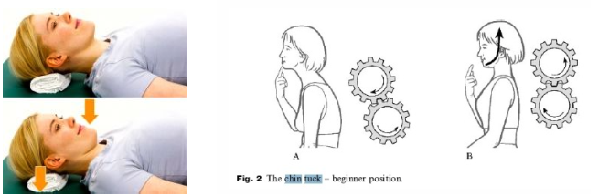
행하여 하루에 20-30분까지 시행하는 것이 좋다.
2) 2단계 복와위
엎드린 상태에서 머리, 경추, 흉추를 정렬을 유지하고 아래 그림과 같이 1~2cm 머리와 경추를 수평으로 들어 올리는 동작을 15회 3세트를 반복한다.
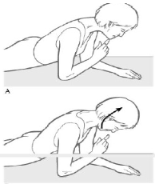
3) 3단계 직립자세
사진과 같이 벽에 기대어 턱을 당기면서 머리로 고무공을 강하게 미는 동작을 8~10회 3세트 시행한다.
3. 견갑골운동
1) 견갑골시계운동
어깨가 시계바늘이라고 생각하고 위쪽 12시 앞으로 3시 아래로 내리며 6시, 뒤로 9시방향으로 운동한다.
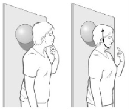
하루 10회 3세트씩 아침저녁으로 자주 시행하고, 통증이 없는 사람의 경우 견갑골을 1-12시 모든 방향으로 한번씩만 움직여줘도 좋다. 오십견처럼 어깨관절 굳어짐이 심한 환자는 45회 3세트로 자주 많이 시행하면 좋다.
2)견관절 안정화운동
①전거근 운동법
그림과 같이 전거근 운동은 누워서 처음에는 1kg 아령을 들고 시행하고 차츰 무게를 늘려간다. 이 단계에서 근지구력 강화를 위한 운동은 25회 3세트이고, 근력강화를 위해서는 5~10회 3세트를 반복한다.
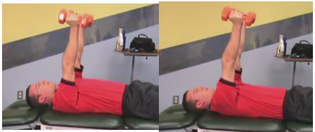
②하부승모근 운동법
그림과 같이 하부승모근 운동법은 엎드려서 팔을 앞으로 뻗고 엄지손가락을 하늘을 보게 하면서 견갑골이 흉곽이 부착하도록 운동을 반복한다.
4. 흉추교정 호흡범 (브뤼거호흡)
1)앉아서
이 운동법은 그림과 같이 상지를 뒤로 신전, 외회전하면서 호흡을 깊이 들이마시고 내쉬면서 원래 편안한 자세로 돌아오는 것이다. 이 동작을 10회 3세트 아침저녁으로 반복한다. 참고로 내쉴때 짧고 강하게 호흡을 5회 내뱉으면 호흡근육을 극적으로 강화할 수 있다
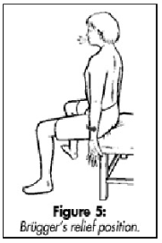
2)누워서
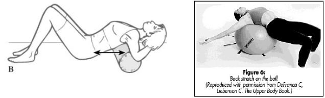
5. 코어강화운동
1)골반전후방운동
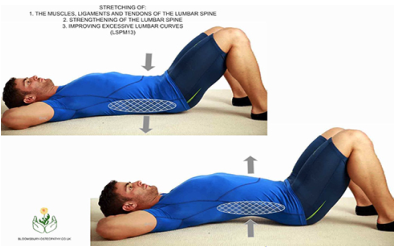
배꼽에 힘을 준 상태(복횡근의 수축)에서 복식호흡을 시행한다.
둔부근육에 힘을 주고, 골반이 고정된 상태에서 치골을 위로 장골을 위로 번갈아 움직인다.
2) 허리 회전운동
앙와위로 누워서 무릎을 구부리고 허리를 좌우로 회전한다. 통증이 호전됨에 따라 사진과 같이 무릎을 교차하고 회전범위를 크게 한다. 통증이 없는 범위 내에서 천천히 45회 3세트를 시행한다. 골반 전후방운동과 마찬가지로 회전운동을 적절하게 시행하면 통증이 즉시 줄어드는 것을 체험할 수 있다.
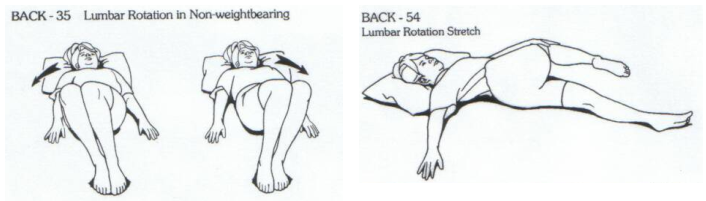
3) 윌리엄 굴곡운동
사진과 같이 무릎을 구부리고 허리를 굴곡하는 동작을 반복한다. 통증이 없는 범위내에서 천천히 10회 3세트를 시행한다. 척추 불안정성이 심한 환자는 윌리엄 굴곡운동을 과하게 하면 디스크 탈출을 조장할 수 있으므로 주의해서 시행한다.
4) 맥켄지 신전운동
사진과 같이 엎드려서 경추, 흉추, 요추의 순서로 천천히 조금씩 몸통 신전운동을 시행한다. 이를 맥켄지 신전운동이라고 하는데 척추가 불안정한 상태에서 과하게 신전하면 후관절 부딪힘을 악화시키고, 신경근 압박을 조장하여 좌골신경통을 악화시킬 수 있기 때문에 주의해서 시행해야 한다. 통증이 없는 범위 내에서 10회 3세트를 시행한다.
5) 살만의 5단계 하복부 강화운동법
** 모든 동작이 끝날때까지 배에 힘을 풀면 안됨
①턱당기고 배힘주고 골반틸팅이후 다리 한쪽씩만 들기 5초 holding 각 5회
한쪽다리 굽혀 가슴가까이 반대다리 들기 5초 각 5회
한쪽다리 굽혀 가슴가까이 반대다리 들고 등들어올리기 5초 각 5회
②턱당기고 배힘주고 골반틸팅후 한쪽다리굽혀 가슴가까이 반대다리 쭉펴기 5초 각 5회
동작후 다리는 다시 굽힌다
③턱당기고 배힘주고 골반틸팅후 양쪽다리 뻗기(발목배굴) 5초 각5회
④턱당기고 배힘주고 골반틸팅후 양다리 90도 들기(발목배굴, 다리어깨넓이) 5초 각5회
하지굴곡 상지차렷 + 반대 하지신전 상지신전만세 10초간 5회반복
cf) 다리 90도 굴곡후 한다리씩 내리는 방식도 있음
6) 맥길의 big 3운동법
주로 12회 3세트 세트사이 휴식시간 90초로 구성되어 있다. 아래 운동을 시행할때마다 최대한 배에 힘을 주고 시행해야 한다.
(1) 복부 컬업운동법(abdominal curl up exercise)
아래 사진과 같이 한쪽 무릎은 구부리고 반대쪽 무릎은 편상태로 손을 뒷머리에 대고 상체를 들어올리고 5초 멈춘후 내려온다. 12회 3세트 휴식시간 1~2분 실시한다.
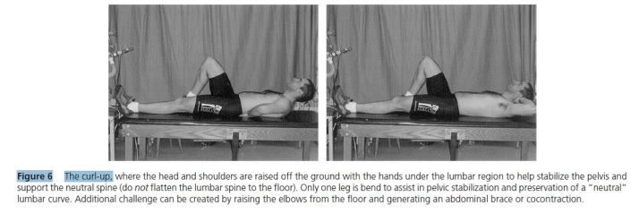
(2) 몸통 측면근력 운동법(side bridge exercise)
아래 사진과 같은 자세를 취하고 5초 멈춘후 내려온다. 5회 3세트 휴식시간 1~2분 운동을 실시한다. 이 과정에서 코어안정의 핵심근육인 외복사근이 강화될 것이다. 디스크 통증이 심한 환자나 몸통측면 근육이 약한 환자는 3단계로 나누어 시행할 수 있다.
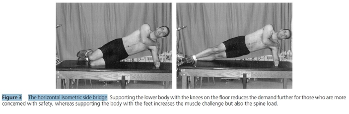
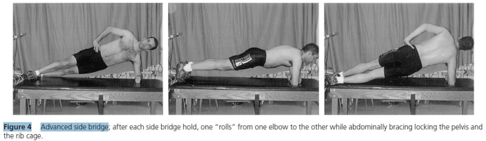
3) 몸통 후면안정화 운동법(bird dog exercise)
아래 사진과 같은 자세를 취하고 팔과 다리를 교차로 들어올리고 5초간 멈춘후 제자리로 돌아온다. 이 과정에서 다열근, 대둔근, 척추기립근 등이 강화된다. 동작의 크기를 바꿈에 따라 다열근만 강화할 수도 있고, 척추기립근을 강화할 수 있다.
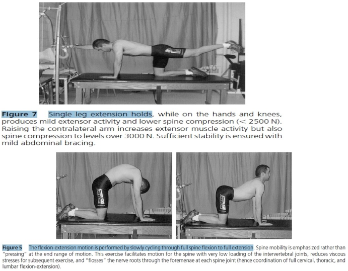
집에서 간단하게 시행할 수 있는 방법을 소개한다.
1) 복부 컬업운동법
2) 사이드 브릿지
3) 매켄지 신전운동의 변형으로 수퍼맨 운동
4) 프랭크 운동법
5) 골반안정화 운동법
6. 고관절 안정화운동
고관절 안정화운동은 요추-골반-고관절 복합체의 불안정성을 치료하는 중요한 운동법이므로 누구나 시행해야 한다. 특히 고관절 외전근인 중둔근 강화운동과 고관절 신전근인 대둔근 강화운동이 치료의 핵심이다.
1)중둔근운동 25회 1세트
2) 대둔근운동
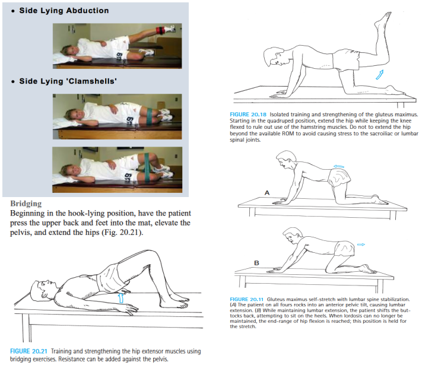
3)고관절내전근운동
일반적으로 10회 이내 3세트를 시행한다.
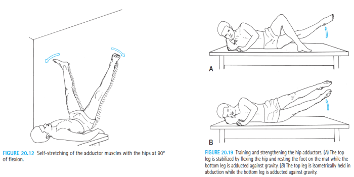
4)고관절회전운동
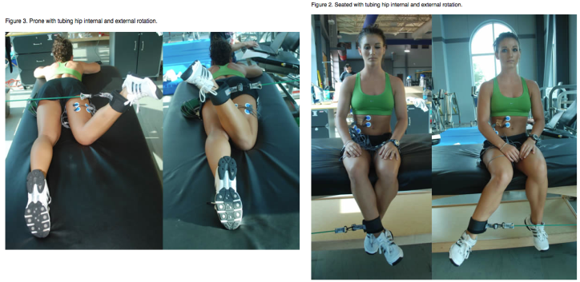
5)고관절굴곡근 스트레칭
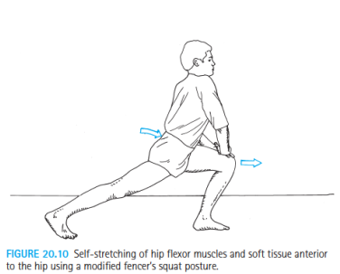
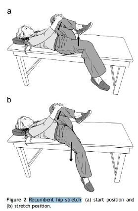
6) 스쿼트 운동법
스쿼트는 체중부하가 많이 걸리는 운동이므로 모든 기능 운동의 거의 마지막 단계에서 시행해야 한다. 생체역학적으로 올바르지 않은 스쿼트 동작을 반복하면 슬개골과 대퇴골의 비정상 부딪힘이 발생하고 척추, 골반의 틀어짐이 고착화되므로 아래에서 설명하는 주의사항을 정확히 따라야 한다.
스쿼트 운동을 시행할때 몇가지 주의사항을 보면 무릎을 구부릴때 슬개골이 발가락 끝을 넘지 않을 것, 천천히 앉았다 일어설 것, 무릎의 내반, 외반변형없이 똑바로 앉았다 일어설 것, 양측골반 높이를 동일하게 유지할 것 등이다.
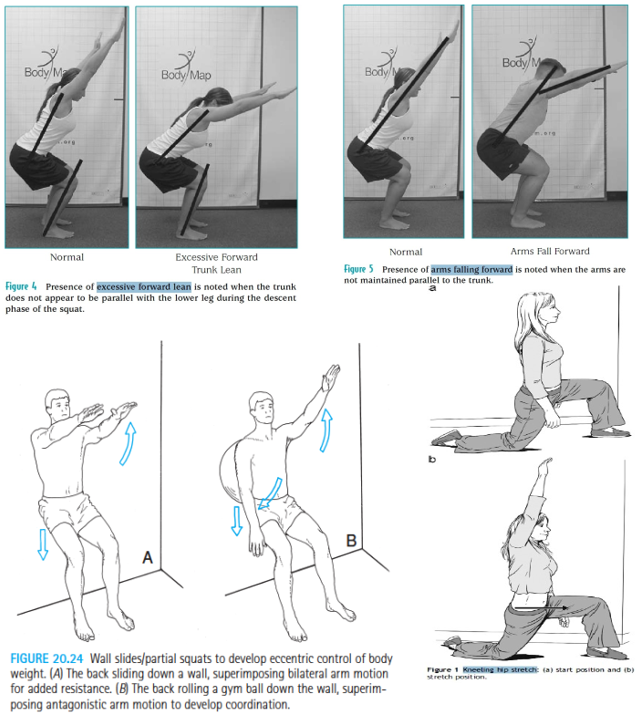
7. 무릎 안정화운동
1) Knee big3 운동
①힐슬라이드 45회 3세트
손상초기는 천천히, 통증이 없는 범위에서 45회 3세트를 시행해야 한다는 것이다. 발뒤꿈치 끌기 운동은 무릎의 반월판 손상, 십자인대 파열, 무릎 부종이 있는 환자에게는 매우 중요한 운동이다. 무릎 관절움직임이 완전히 회복되고 무릎관절에 부종이 없으면 발뒤꿈치 끌기 운동운동은 생략한다.
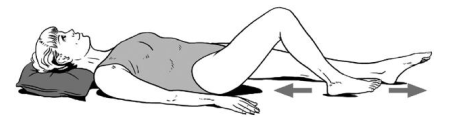
②pillow push
다음으로 베개 누르기 운동은 슬개골의 안정성을 향상시키는 가장 기초적인 운동 중의 하나다. 간단하게 무릎 뒤로 베개를 눌러서 3~5초 동안 힘을 주고 힘을 빼는 동작을 반복한다. 12~15회 3세트 반복하며 목표에 따라 하루에 수차례 반복 수행한다.
③하지거상
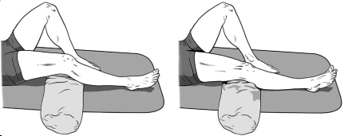
무릎 신전운동(knee extension)은 무릎을 완전히 펴서 발을 들어올린다. 무릎 신전을 3~5초 동안 유지한 후 다리에 힘을 빼는 동작을 반복한다. 12~15회 3세트 반복하며, 목적에 따라 하루에 수차례 반복 수행한다.
2) 무릎신전 근력강화와 굴곡근력강화 운동
이 의자에 앉아 무릎폈다 내리기 (대퇴사두근 저항운동) 시행하기
모래 주머니로 저항을 주면 좋다.
3) 자전거타기 운동
자전거 타기는 기본적으로 닫힌 사슬운동이면서 대표적인 유산소운동이다. 무릎의 국소 안정화 근육과 대둔근을 강화하는데 효과적이다.
자전거 타기가 치료적 운동이 되기위해 알아야 할 몇가지가 있다.
먼저 자전거 안장의 높이를 결정해야하는데 생체역학적으로 가장 효과적인 높이는 안장의 높이를 고관절의 대전자 높이에 맞추는 것이다. 다음으로 아래 그림과 같이 무릎이 내반되거나 외반되지 않게 하는 것이 중요하다. 또한 상체가 흔들리지 않고 밀기 단계, 파워단계, 회복단계에서 각각 원하는 근육을 정확하게 강화할 수 있어야 한다.
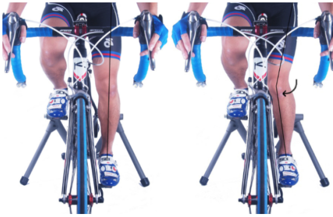
8. 족궁개선운동
1) 발바닥 내재근 강화를 통한 족궁개선운동
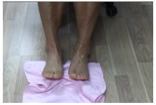
첫동작은 발가락을 쫙 펴고 다음 동작으로 5개의 발가락을 모두 사용하여 수건을 잡고 당기는 동작을 반복한다. 처음에는 수건위에 1kg아령을 올려 시행하고 점차 저항무게를 올려 10kg 아령 무게까지 저항운동 강도를 높여간다. 반드시 정확한 자세를 취하고 종아리 근육, 전경골근 등 주위근육을 사용하지 말고 오직 발바닥 근육만을 사용하여 정확하게 운동해야 한다. 일반 환자들은 10kg을 5회이상 반복할 정도의 근력이면 충분하고 엘리트 운동선수는 12~15kg까지 끌어당기는 것을 5회이상 반복할 수 있을때까지 저항운동 강도를 높인다.
2) 외재근인 후경골근 강화를 위한 족궁개선 운동
먼저 단순히 발뒤꿈치를 들었다 놓았다를 20회이상 반복할 수 있을 때까지 시행한다. 그리고 까치발 만들고(엄지발가락까지 확실히 힘) 뒤꿈치 붙이고 내려오기(후경골근 강화운동)을 15회 3세트를 시행할 수 있을 때까지 운동강도를 높인다. 15회 3세트는 후경골근의 근력과 근지구력을 동시에 강화하는 저항운동 강도다.
9. 치료적 보행교정과 운동법
올바른 자세와 정렬을 바탕으로 올바른 움직임 즉, 보행이 나온다.
전체적인 바른 보행자세는
시선은 눈에서 상방 15도 정도를 바라보고
턱을 당기고 가슴을 펴고
손은 달걀을 가볍게 쥐는 정도로 하고 엄지손가락이 정면을 보도록 걷는다.
이렇게 똑바로 서서 걷는데 머리중앙이 천정에서 줄이 잡아당기는 느낌으로 걸으면 가장 자연스럽다.
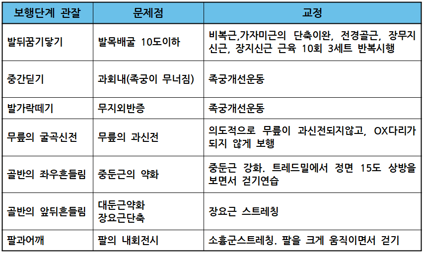